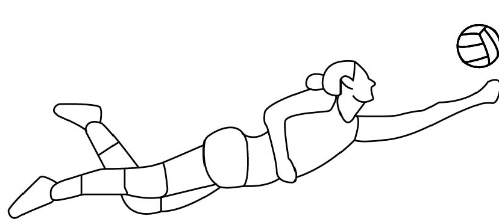

The attack is the foundation that usually ends a rally.
There are several types of attack:
high ball attack at the ends: It is considered the safest, because it takes the longest. Not being an immediate play allows players to study the plays in progress, for this reason, this type of attack is also called a safety ball.
fastball attack on the extremities
fastball attack in the middle
back court attack: It is a good attack alternative, since it is not carried out from the attacking zone, but from the defense zone, that is, from the back of the court.
middle attack
Defense

Defense movement
Defense is an action that aims to prevent the opposing team's attack from resulting in a point. Blocking can be considered a defensive action when it aims to dampen the opponent's attack and thus facilitate reception. The libero is a player who performs only defensive actions, using headlines and touch to perform them.